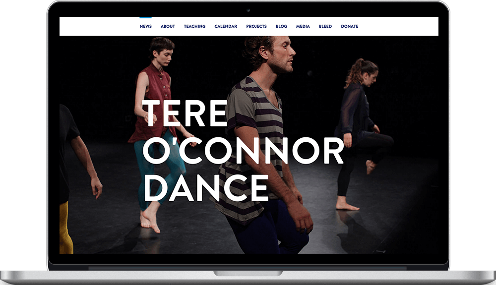
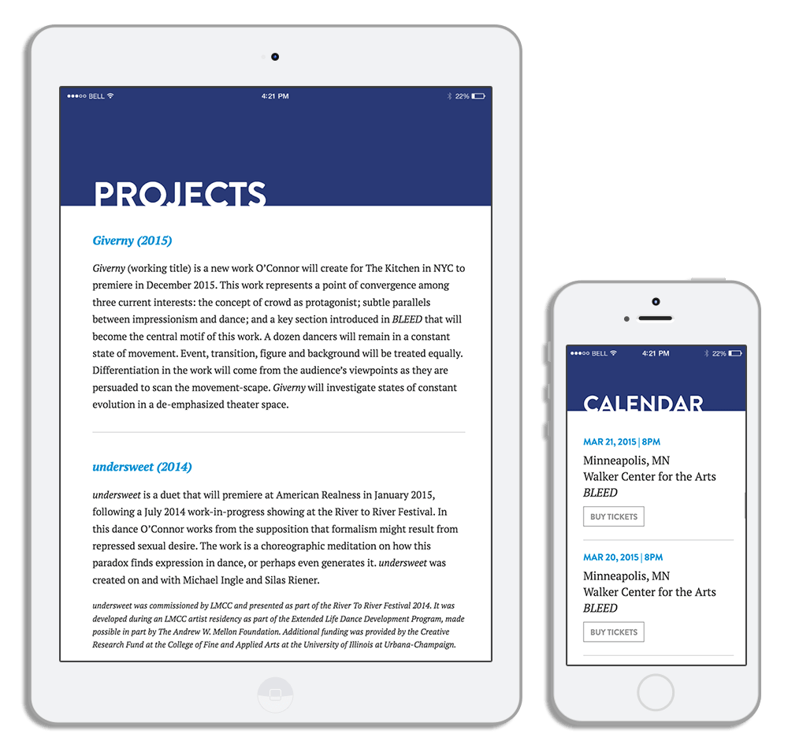

Tere O’Connor Dance
Interface Design | Web Development

Responsive website for Tere O’Connor Dance, a modern dance company based in New York City. I provided all design and development duties for this project, which included customer research, content strategy, creating mockups, and building a custom Wordpress theme. The site highlights upcoming performances, media, company information, and various teaching resources. I also customized the Wordpress admin area to make site updates user-friendly for the company.

